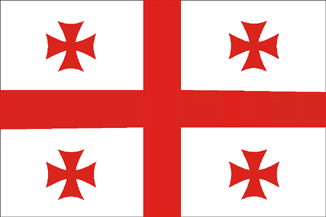

საქართველო
საქართველო მდებარეობს კავკასიის რეგიონში, შავი ზღვის აღმოსავლეთით. ცნობილია თავისი უძველესი კულტურით, სტუმართმოყვარეობითა და უნიკალური ენით. მისი დედაქალაქია თბილისი.

იაპონია
იაპონია კუნძული ქვეყანაა აღმოსავლეთ აზიაში. ცნობილია ტექნოლოგიით, ანიმეთი, სამურაებითა და ტრადიციული კულტურით. დედაქალაქი - ტოკიო.

საფრანგეთი
საფრანგეთი დასავლეთ ევროპაშია და ცნობილია მოდით, ხელოვნებითა და ფრანგული სამზარეულოთი. დედაქალაქი - პარიზი „სიყვარულის ქალაქად“ ითვლება.

იტალია
იტალია მდიდარია ისტორიული ძეგლებითა და კულტურით — რომაული იმპერია აქ წარმოიშვა. ცნობილია პიცით, პასტითა და ხელოვნებით. დედაქალაქი - რომი.

აშშ
ამერიკის შეერთებული შტატები ჩრდილოეთ ამერიკაში მდებარეობს. ის მრავალფეროვანი ქვეყანაა ეკონომიკით, კულტურითა და მეცნიერებით. დედაქალაქი - ვაშინგტონი

ბრაზილია
ბრაზილია სამხრეთ ამერიკის უდიდესი ქვეყანაა. ცნობილია ფეხბურთით, კარნავალითა და ამაზონის ტყით. დედაქალაქი - ბრაზილია.

ეგვიპტე
ეგვიპტე აფრიკის ჩრდილოეთით მდებარეობს. ცნობილია პირამიდებით, ნილოსის მდინარითა და უძველესი ფარაონების ისტორიით. დედაქალაქი - კაირო.
ჩინეთი
ჩინეთი მსოფლიოში ყველაზე დიდი მოსახლეობის მქონე ქვეყანაა. ცნობილია დიდი ჩინეთის კედლით, ტრადიციებითა და სწრაფი ეკონომიკური ზრდით. დედაქალაქი - პეკინი.
ავსტრალია
ავსტრალია კონტინენტიცა და ქვეყანაც ერთდროულადაა. ცნობილია კენგურუებით, ბუნებრივი პარკებითა და მშვიდი ცხოვრების სტილით. დედაქალაქი - კანბერა.

გერმანია
გერმანია ევროპაში ერთ-ერთი ყველაზე განვითარებული ქვეყანაა. ცნობილია მანქანებით (BMW, Mercedes), ინჟინერიითა და დისციპლინით. დედაქალაქი - ბერლინი.